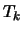
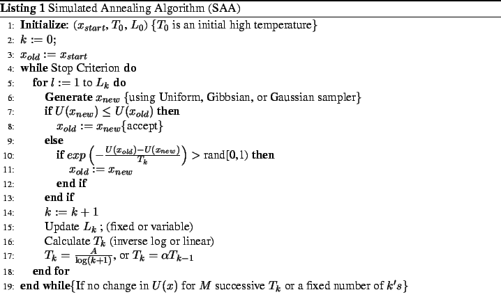
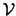
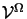
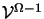
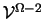
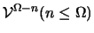
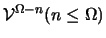
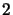

The multiresolution idea of looking at signals and analyzing them at various scales or resolutions has received enormous attention in the field of computer vision. Multiresolution is a mode of efficiently and effectively representing the data with an objective of reducing the computational complexity. Multiresolution can be thought of as a data structuredata structure which produces a successive condensed representation of the information in a given image. The data at each resolution is the output of a bandpass filterbandpass filter with some centre frequency, usually the centre frequency of the filters are octave apart. The most obvious advantage of this type of representation is that they provide a possibility for reducing computational cost of various image operations. The reduction in the computational cost is due to the fact that when we operate in a multiresolution framework, we operate on data from the coarse to the fine resolution. The result of going through such a procedure is that, at the finest resolution we start off with a fairly good guess of the solution, the guess having come from the immediate coarse resolution and hence we need less time to reach the solution. One does indeed need to start with an arbitrary guess at the coarsest resolution, but at that resolution the amount of data one is operating on is many orders of magnitude less than that at the finest resolution.
In multiresolution representation, the problem of solving the vision task  is reduced to the task of solving at each resolution. Let,  represent the vision task at the finest resolution . In the multiresolution approach the vision task is not solved directly, but is solved by solving the vision tasks , , ,  at coarse resolutions and appropriately passing the variables of interest from coarse to fine resolution. The motivation to use multiresolution in vision task comes from:
There exists two predominant ways of constructing multiscale
representationsmultiscale representations using
multiscale filtering: (i) GaussianGaussian pyramid
and Laplacian pyramidsLaplacian pyramid
proposed by Burt and Adelson [95]
and (ii) the wavelet
pyramids [94]. Both these assume
that the image size be a power of
 (see Appendix D for discussion on
custom made
pyramids). Gaussian pyramids are obtained by smoothening
brightness
values over larger areas producing a set of low pass filtered copy
of the original image and Laplacian pyramids are obtained by
differentiating smoothed brightness values producing a set of bandpass
filtered copy of the original image (see Figure
2.2).
The wavelet pyramids are constructed by low pass filtering and high pass
filtering the image along the rows and then along the columns to produce
four quadrants (
,
Figure 2.5) such that the first quadrant is low
pass filtered along both the rows and columns of the image,
the second quadrant is low low pass filter high pass filter
pass filtered along the rows and high pass filtered along the columns, the
third quadrant is high pass filtered along the rows and low pass filtered
along the columns and finally the fourth quadrant is high pass filtered
along both rows and columns. The filter coefficients are determined from a
set of four linear equations obtained as a consequence of the constraints
placed on the coefficients of the filter [96].
(see Appendix D for discussion on
custom made
pyramids). Gaussian pyramids are obtained by smoothening
brightness
values over larger areas producing a set of low pass filtered copy
of the original image and Laplacian pyramids are obtained by
differentiating smoothed brightness values producing a set of bandpass
filtered copy of the original image (see Figure
2.2).
The wavelet pyramids are constructed by low pass filtering and high pass
filtering the image along the rows and then along the columns to produce
four quadrants (
,
Figure 2.5) such that the first quadrant is low
pass filtered along both the rows and columns of the image,
the second quadrant is low low pass filter high pass filter
pass filtered along the rows and high pass filtered along the columns, the
third quadrant is high pass filtered along the rows and low pass filtered
along the columns and finally the fourth quadrant is high pass filtered
along both rows and columns. The filter coefficients are determined from a
set of four linear equations obtained as a consequence of the constraints
placed on the coefficients of the filter [96].
Nevertheless the wavelet representationwavelet representation of the image is more compact in the sense, the lattice size does not increase. The wavelet transform of an image of size  is again an image of size where as the Gaussian pyramid when constructed as suggested in [95] would end up with a larger number of data points [94].